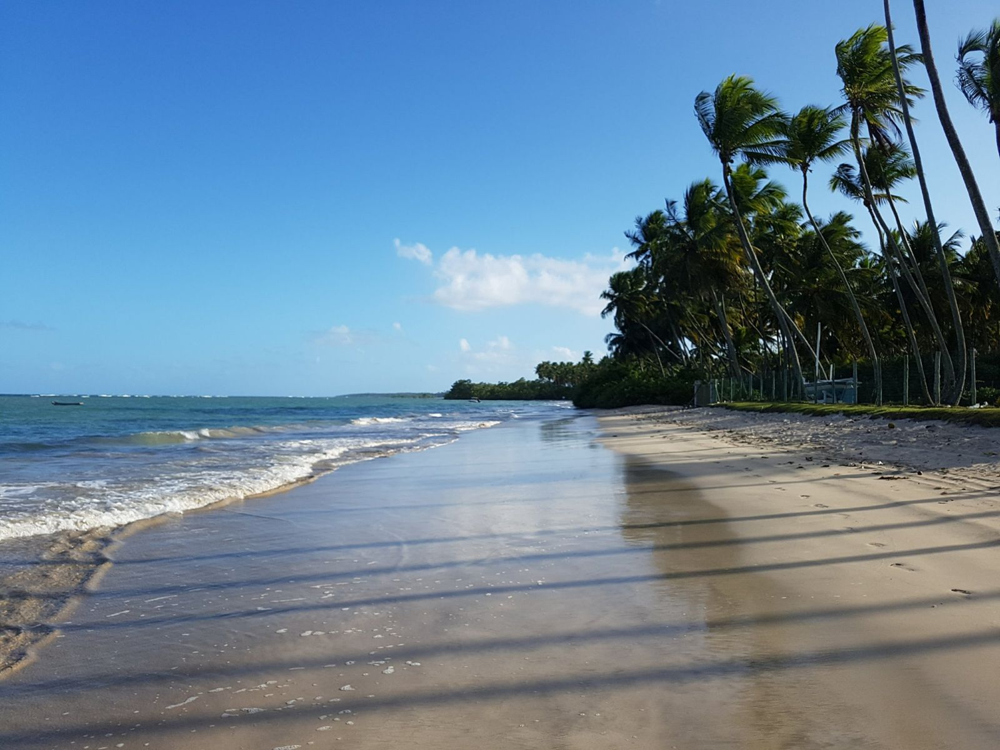
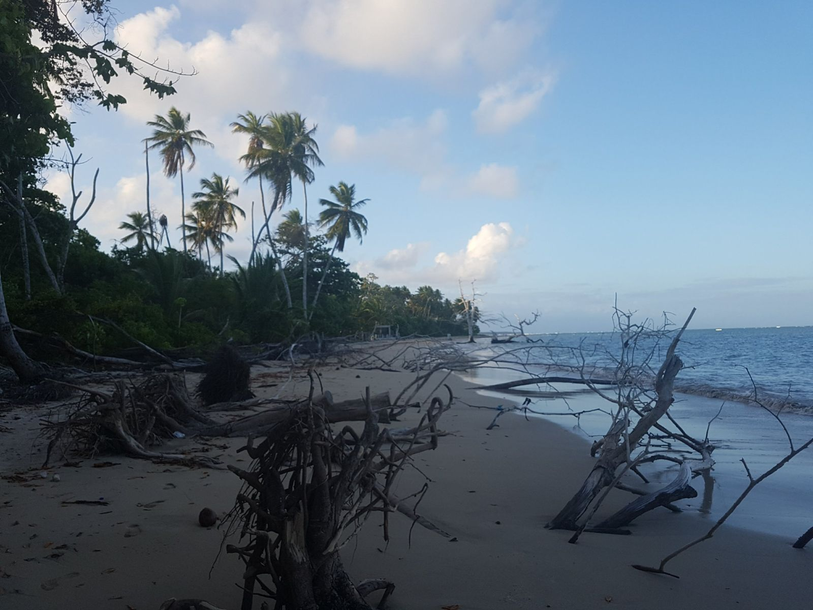
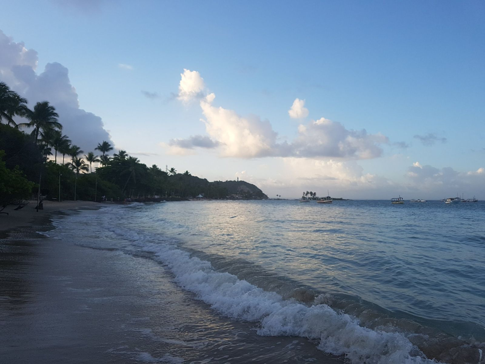
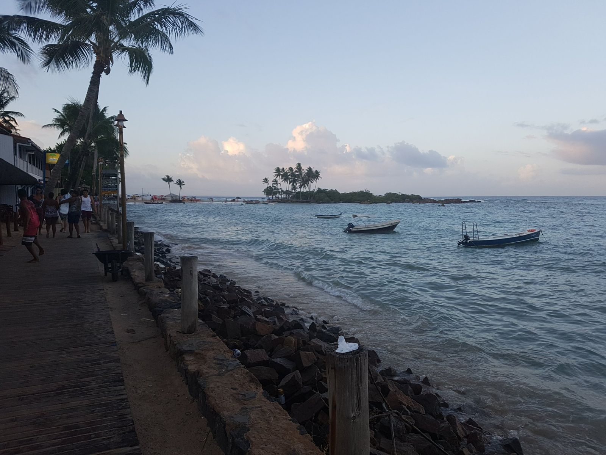
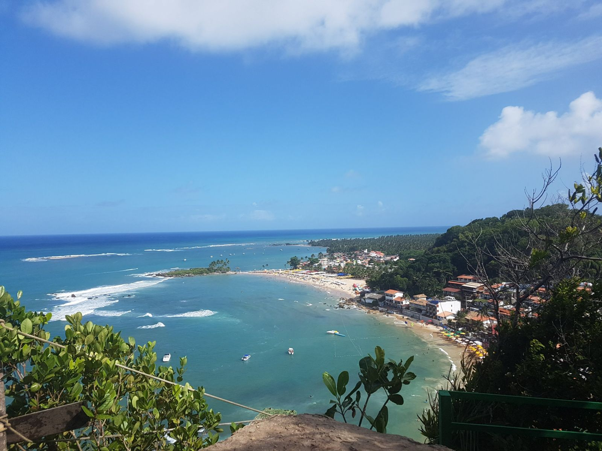
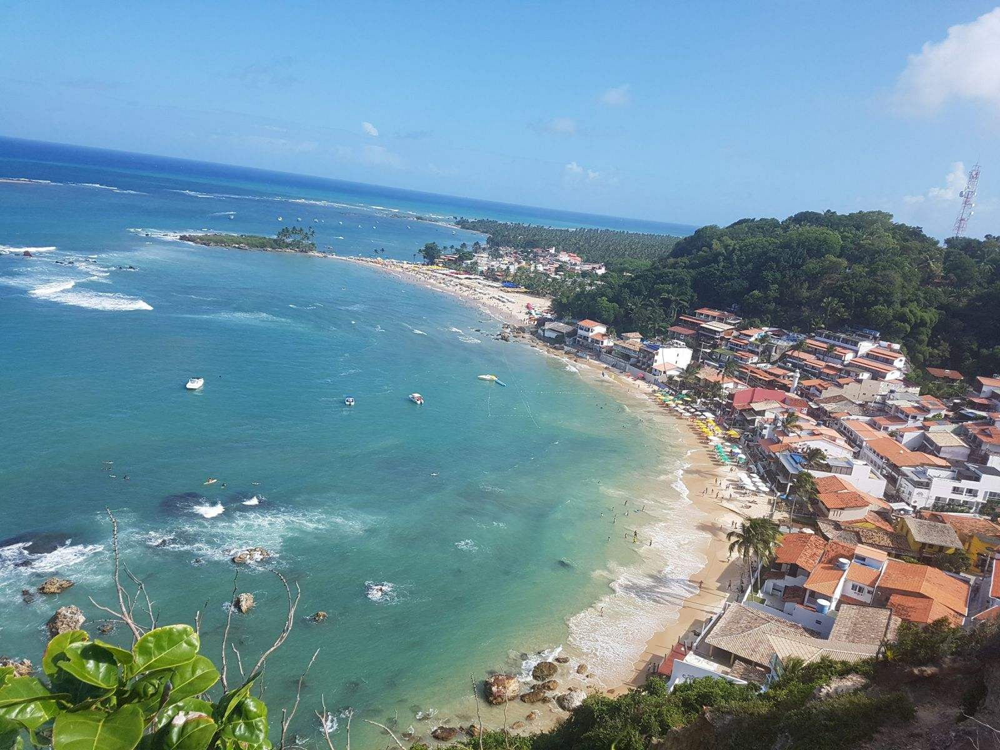
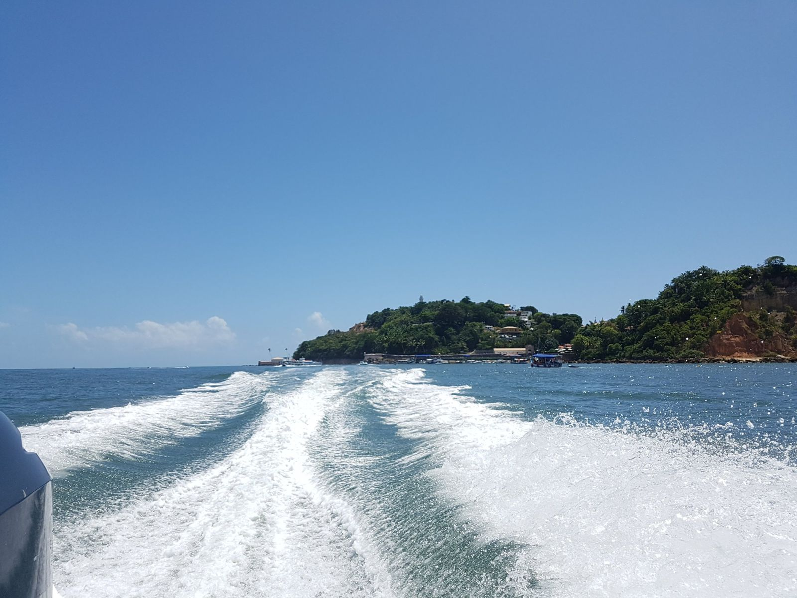

South America · Brazil · Bahia
Morro de São Paulo, January 2018
This chapter starts after Rio de Janeiro. I flew north to Salvador, as I remember it, slept a night at the airport and the next day took a boat to Morro de São Paulo, a small island village in Bahia with no cars. I have photos from three days there, January 17, 18 and 19, and the last one is from a boat leaving the island. After Morro I went on to Itacaré, and I write about that at the end of the chapter.
My conclusion up front: Morro de São Paulo was three easy days of beaches after a hard trip, but the way there is the part to plan. I do not have the exact date of the flight, the name of the agency that sold me the boat, the price, or the names of the beaches in most of my photos. Where I say what I think, I write "I think".
About the times: the file names of my photos show my phone's clock, and Google Photos shows a time one hour later for the photos I checked from January 17 and 18 (GMT-3, the time zone of Bahia). The light in the pictures fits the phone's clock better: the photo with the file time 17:46 is already in pink dusk light, and Google Photos shows 18:46 for it. So when I give a time here, it is the phone's clock, and I do not know why Google Photos adds an hour.
The days before this chapter are in the Brazil chapter on Rio de Janeiro.
From Rio to the island
I do not have the date of the flight. My last item from Rio is the night out on January 14, I have nothing at all from January 15, and from January 16 I have only screenshots from my phone, maps and searches, which I do not show here because they are screens of my phone. The route in the maps starts in Rio, so I was probably still in Rio that day, and in the searches I was looking at other places too, Lopes Mendes and São Thomé das Letras. In the end I went north. I think I flew from Rio to Salvador on January 16 and that the boat day was January 17, because my first photos from the island are from that afternoon, but I cannot prove it.
What I found: a route page on flightconnections.com, updated on November 21, 2026, lists Gol and LATAM as nonstop airlines from Rio de Janeiro Galeão to Salvador, a flight time of about 2 hours 5 minutes and 58 flights a week (flightconnections.com).
What I did not find: fares I can quote, the airline I flew in 2018 and its price.
The night at Salvador airport
I think I slept in Salvador airport, because the boat from the city leaves in the morning and I did not want to pay for a room for a few hours. I do not recommend it. There were a lot of mosquitoes, and I hardly slept.
What I found: the Salvador guide on Sleeping in Airports, updated on March 25, 2026, says the terminal is open around the clock and that sleeping there is not comfortable. It also has reports of stolen phones and laptops (sleepinginairports.net).
What I did not find: anything about mosquitoes. That part is only my experience, from one night.
The boat to Morro
I think there was a travel agency in the airport, and that I bought the transfer from it, a boat to the island the next day. I do not remember the name of the agency, the price, the departure time or how long it took. I remember that it was a boat and not a long drive, and the photo at the end of this chapter is from the way back out, not the way in.
What I found: a guide by Melhores Destinos, last modified on November 20, 2026, describes two ways. A catamaran from the tourist marine terminal in Salvador takes about 2 hours 30 minutes, with departures at 8:30, 9:00, 10:30, 13:00 and 14:30, and costs R$127.80 plus a R$10.90 boarding fee. A "semi-terrestrial" transfer sold by agencies, a van and a boat through Valença, takes about 4 hours 30 minutes and costs about R$120, or about R$160 with a pick-up at the airport (guia.melhoresdestinos.com.br).
What I did not find: which of these I took, and the agency I used. The agency transfer with an airport pick-up fits what I remember, but I have no ticket or photo to confirm it.
What I found: two sources that disagree. The Melhores Destinos guide lists a fee of R$50 for the environmental use of the island (TUPA) and a R$20 fee at the departure point. A report in A Tarde, published on June 16, 2026, says the TUPA has been R$70 since December 2025 and that R$90 is planned, with the start date given as August 1, 2026 in the article and July 1 in its FAQ. It says the payment is valid for 30 days and that children up to 5 are exempt (atarde.com.br).
What I did not find: what I paid in 2018, or whether I paid. I would check the amount on the official channels before the trip.
The hostel
I think I slept in a hostel called Black & White. I do not remember the price, the number of nights, the room or the street. A booking website lists a "Pousada Hostel Black White" on Rua da Terceira Praia in Morro de São Paulo, with no price and no date (kayak.com). I cannot tell if it is the same place or if it is open today.
January 17: the beach in the afternoon
The first photos are from the afternoon of January 17. Google Photos puts them at Morro de São Paulo and nothing more precise, and the pin is inland, near Fonte do Céu and Quarta Praia, so I do not say which beach is which. I took one photo of a crowded wooden boardwalk by the sand, with people very close to the camera, and I do not show it. The ones below are empty stretches of sand: a beach with fallen trees and palms at 17:30, and another with palm shadows on the wet sand, which I photographed earlier, at 16:32.


January 18: the village side
On January 18 Google Photos places the evening photos in the village of Morro de São Paulo itself. At the end of the day, around 17:36 to 17:46 by the phone, I walked on the sand and on the wooden boardwalk. From there you see a small green island with palms, boats anchored in the water and a lighthouse on the hill. The lighthouse hill, the small island and the boats are the same three things in all my evening photos.


Earlier that day, from about 14:46 to 14:54, I went up to a viewpoint above the village. I have five photos from there, and I show two: the bay with the small island at its end, the beach with its umbrellas and the village houses with red roofs.


January 19: leaving by boat
The last photo is from the morning of January 19, at 10:33. Google Photos pins it in the sea just north of the village, near the lighthouse, so I took it from a fast boat that was leaving the island: the wake, the harbour and the lighthouse hill behind it. I do not remember where this boat went, how much it cost, or whether I booked it in advance.
I remember that I reached Itacaré after Morro, and that to leave Itacaré you need a ferry. I do not remember which ferry or where I was going. What I am not sure about is whether the boat in this photo is the one that took me toward Itacaré. It may have been a boat to a nearby pier, with another one or a road after it. I do not know, and Google Photos only shows that I was on the water just north of the village.
What I found: I did not find one source that describes the whole route. A guide by Melhores Destinos, last modified on November 20, 2026, describes a boat from Barra Grande to Camamu, about 30 minutes by speedboat or 1 hour 30 minutes by a slower boat, around R$55, with departures every hour from 6:00 to 17:00. From Camamu it is about 50 minutes by road to Itacaré, with buses at 12:50, 17:05 and 21:40 from R$15. The guide says that its prices were last updated in July 2021 (guia.melhoresdestinos.com.br). A page of the Boipeba island site describes another way, a bus from Itacaré to Valença of about 3 hours for around R$25, and a boat from there, but it shows no date (ilhaboipeba.org.br). The booking site Bookaway lists a shuttle between Morro and Itacaré of about 4 hours 30 minutes for 62 to 69 US dollars, and does not say if a boat is part of it (bookaway.com). About a ferry in the Itacaré area, the Itacaré guide at itacare.com (undated, it seems to be from 2025) and an article on Esse Mundo é Nosso (last updated October 2, 2024) mention one only on the way from Salvador: the ferry boat to Bom Despacho on Itaparica island, and then a bus on the BA-001. The article says that the route from Ilhéus has no ferry (itacare.com, essemundoenosso.com.br).
What I did not find: which of these I used in 2018, what I paid, and the date I arrived in Itacaré. I also did not find a ferry out of Itacaré itself. The Salvador to Bom Despacho ferry is the only one I found, so my memory may be of a trip towards Salvador, but I cannot confirm that.

What I do not remember
I do not remember the date of the flight from Rio, the airline, the price, or if the day I arrived at Salvador was January 16. I do not remember the name of the agency at the airport, the price of the transfer, or how I paid the island fee. I do not remember the hostel's address, the price or the number of nights, and I am not sure that Black & White is the right name. I do not know the names of the beaches in my photos. I do not remember what I ate, what I did on the 17th evening or the 18th morning, or where the boat took me on January 19. I do not know if the boat in the last photo is the one that took me toward Itacaré, or how and when I reached Itacaré. I remember that leaving Itacaré needed a ferry, but not which one.